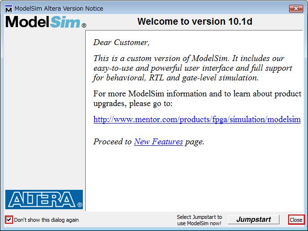

ModelSimの使い方 - カウンタのRTLシミュレーション
はじめに
本ページでは，ModelSimを単体で使用して（Quartus IIと連携させない），HDLで記述された回路に対してRTLシミュレーションを実行する方法を紹介します． ModelSimはMentor Graphics社のシミュレータですが，ここでは，AlteraのFPGA/CPLD開発向けに提供されているModelSim-Alteraを使用しています． 基本的な操作方法は変わりませんし，手元にFPGA開発ボードがなくても大丈夫です． PCさえあれば，RTLシミュレーションで回路動作を確認しながら，HDLの勉強をすることが可能です． Verilog-HDLでの回路設計に関する解説は割愛しますが，記述例を掲載しますのでご覧ください．
以降で掲載するスクリーンショットは下記の環境のものです． ModelSimのインストール方法についてはこちらをご覧ください．
| OS | Microsoft Windows Server 2008 Standard x86 Service Pack 2 |
|---|---|
| Quartus II | 未インストール |
| ModelSim | Mentor Graphics ModelSim-Altera Starter Edition v10.1d |
Verilog-HDLによる回路記述
シミュレーション対象の回路記述を用意します． 今回は下記のようなアップダウンカウンタとしました． テキストエディタで回路を記述し，任意の場所に作成したプロジェクトフォルダ「counter」内に， 「counter.v」という名前を付けて保存します．
{kind=link}
module counter(clk, a, b, z);
input clk, a, b; // Inputs
output [1:0] z; // Outputs
reg [1:0] ff; // Registers
wire g0, g1, g2, g3; // Wires
// Combinational Circuit
assign z = ff;
assign g0 = ~(a | ff[0]); // NOR Gate
assign g1 = b ^ ff[1]; // XOR Gate
assign g2 = ff[0] ^ g1;
assign g3 = ~(a | g2);
// Flip-flops
always @(posedge clk) begin
ff[0] <= g0;
ff[1] <= g3;
end
endmodule
Verilog-HDLによるテストベンチ記述
テストベンチを記述し，上記と同じプロジェクトフォルダ内に「tb_counter.v」という名前を付けて保存します． 本ページはModelSimの使用方法の解説を主な目的としていますので，テストベンチ記述に関する解説は省略します．
`timescale 1ns/1ns
module tb_counter();
parameter CYCLE = 20;
reg clk, a, b; // Inputs
wire [1:0] z; // Outputs
// Instantiate the Circuit Under Test (CUT)
counter u0(
.clk(clk),
.a(a),
.b(b),
.z(z)
);
// Clock Generator
always #(CYCLE / 2)
clk = ~clk;
initial begin
clk = 1'b0; a = 1'b1; b = 1'b1; // a,b
#CYCLE a = 1'b0; b = 1'b0; // 0,0
#(CYCLE * 6) a = 1'b1; b = 1'b0; // 1,0
#(CYCLE * 6) a = 1'b0; b = 1'b1; // 0,1
#(CYCLE * 6) a = 1'b1; b = 1'b1; // 1,1
#(CYCLE * 6)
$display("Simulation End.");
$stop;
end
endmodule
プロジェクトの作成
スタートメニューからModelSimを起動します．
{kind=link}
スプラッシュ画面が表示され，ModelSimが起動します．
{kind=link}
下図のようなウィンドウが表示された場合は，「Don't show this dialog again」にチェックを入れて，「close」をクリックします．
{kind=link}
下図のようなウィンドウが表示されたら，ModelSimの起動は完了しています．
{kind=link}
シミュレーションを実行するため，プロジェクトを作成します．「File」 > 「New」 > 「Project」の順にクリックします．
{kind=link}
プロジェクト名とプロジェクトフォルダを設定します． ここではプロジェクト名を「counter」とし，プロジェクトフォルダは先ほどVerilog-HDLファイルを保存したフォルダを指定しました． その他の項目は特に変更する必要はありません．
{kind=link}
作成したプロジェクトに回路記述とテストベンチ記述を追加します． 「Add items to the project」ウィンドウで「Add Existing File」をクリックします．
{kind=link}
「counter.v」および「tb_counter.v」をプロジェクトに追加します．
{kind=link}
コンパイルの実行
回路記述やテストベンチ記述をコンパイルします． 「Compile」 > 「Compile All」の順にクリックし，プロジェクトに関連付けられた全てのVerilog-HDLファイルをコンパイルします．
{kind=link}
正常にコンパイルされた場合，「Status」欄の「?」が「✓」に変わります． もし回路記述やテストベンチ記述に問題があれば，「Status」欄は「✕」になります． コンパイルエラーに関する詳細情報は，「Transcript」ウィンドウのエラーメッセージをダブルクリックすることで確認できます． コンパイルエラーが消えるまで，記述の修正と再コンパイルを繰り返しましょう．
シミュレーションの実行
コンパイル完了後，ウィンドウ下部の「Library」タブをクリックして，「Project」タブから「Library」タブに移動します．
{kind=link}
シミュレーションを開始するために，「Library」タブの「work」ディレクトリを開き，「tb_counter」をダブルクリックします． 自動的にウィンドウ表示が「sim」タブに移行します．
{kind=link}
「sim」タブの表示に切り替わりました． もしシミュレーション対象の回路とテストベンチの間の接続に関する記述などに問題があった場合，正常に「sim」タブに移行しません． その場合は，回路記述とテストベンチ記述を見直し，再度コンパイルから実行してください．
左側の「sim」タブには，テストベンチに接続されている全てのモジュールが表示されています． 各モジュールをクリックすると，右側に各モジュールの入出力ポート名などが表示されます．
{kind=link}
シミュレーション結果として波形を確認したい入出力信号線などを選択します． 例として，シミュレーション対象回路の全ての外部入出力信号線における波形を確認したい場合は， 「tb_counter」を選択して右クリックし，「Add to」 > 「Wave」 > 「All items in region」の順にクリックします． また，個別に信号線を選択し，追加することも可能です．
{kind=link}
シミュレーションを開始します． ツールバーの「Run -All」ボタンをクリックします．
{kind=link}
シミュレーション終了後，波形は「Wave」タブで確認することができます． また，「Transcript」ウィンドウの履歴を見ると， 上のテストベンチ記述例の31行目でシミュレーションが終了し，「Simulation End.」と出力されていることが確認できます．
{kind=link}
シミュレーション終了直後は波形の一部のみが「Wave」タブに表示されていると思いますが，波形は任意の倍率に拡大・縮小およびスクロールできます． 一度「Wave」タブを選択するとズーム機能のアイコンが有効になるので，適宜使用してください． 「Zoom Full」を使えば，「Wave」タブの大きさにフィットする倍率で波形全体が表示されます． また，2bit以上のbit幅がある信号線は集約されていますが，信号線名の左横の十字マークを選択すると展開表示できます．
標準では2進数で数値が表示されていますが，この数値の基数を変更することも可能です． 2進数，8進数，10進数，16進数の他にも，数値をアスキーコードとして扱い，文字として表示することも可能です．

「Wave」タブに新しい表示対象を追加しても，一部の波形が表示されない場合があります． その場合は，「Restart」ボタンをクリックした後で，「Run -All」ボタンをクリックしてシミュレーションを再実行しましょう． 「Restart」をクリックせずに「Run -All」をクリックすると，シミュレーションの再実行結果の波形は，以前の実行結果の直後に挿入されますので注意してください．
シミュレーション結果（波形）を画像として保存する
「File」 > 「Export」 > 「Image...」から，波形をビットマップ形式の画像ファイルとして出力・保存できます．
{kind=link}